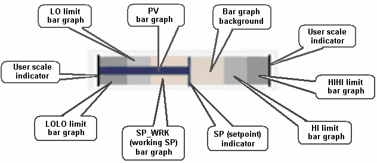
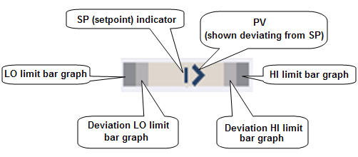
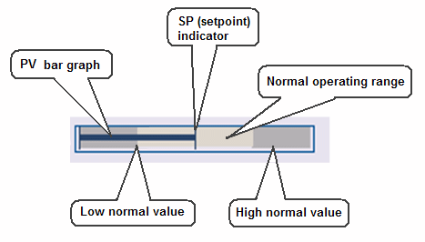
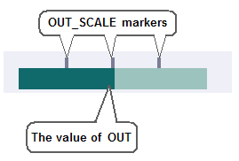
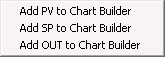

FrsModules_Theme dynamo reference
DeltaV Operate provides standard dynamos that are themed by color and design elements. These dynamo sets are named with "_Theme" and are based on the DeltaV color themes and use the Theme_Colors threshold table in frsVariables. Using the same themed color set for all objects on the picture, for all accessible popup pictures (faceplates, detail displays), as well as for the picture background color assures you that the colors will work well together without one color obscuring another. The following sections describe the common elements and functionality found in the frsModules_Theme dynamos.
frsModules_Theme Elements
The following elements are found on dynamos in the frsModules_Theme set. These elements have the same behavior and location across all the dynamos where the element is used. For example, alarm indication is in the upper left corner for all of the dynamos and mode indication is always tot he left of the status indication. Consistency of element location creates a fixed spatial location within the dynamo for this related information. This is important because when operators can rely on looking to the same place, the display is less confusing and they can more quickly scan a display to understand what tags are affected.
Additionally, labels, along with consistent location within the dynamo, are used to distinguish data (for example, PV from SP) instead of different colors.
The following lists the elements used in this dynamo set and their corresponding behavior. Other behaviors specific to the dynamo are explained in the specific dynamo's topic.
Alarm Box
The dynamo is surrounded by a thick colored rectangle at run time when a module alarm is active or unacknowledged. The color corresponds to the highest priority alarm color. When a dynamo is selected, it is surrounded by a slightly larger thin rectangle.
Alarm Icon
The alarm icon shows the highest priority alarm for that module. The suppressed alarm icon is visible if there is a suppressed alarm (that would otherwise be active) and there are no other active or unacknowledged alarms.
Display Tag (Disp)
This is a single field of 16 text characters. The run time visibility is controlled by the toolbar button: Toggle Display Tag. Options include:
Show the module name (.A_TAG)
Show the module description (.A_DESC)
Show the friendly name (current value of a variable based on entry at configuration time)
Show none of the above
If the friendly name is the default empty value (and the option, Show the friendly name, is selected), nothing is displayed. The display tag field always consumes screen real estate, but is visible based on the operator's preference. The toolbar button appears on the toolbar of all monitors and the operator action applies to all monitors. That is, the operator cannot choose to show the module name on one monitor and the module description on another.
The text color is based on the named Tag EU color in the Theme_Colors table.
Dynamo Background
The background color of the dynamo is based on the named dynamo background color in the Theme_Colors table. The dynamo background is smaller when the alarm and status boxes are not visible. The dynamo background is highlighted (surrounded by a slightly larger thin rectangle) when the dynamo is selected and the module's faceplate is open.
Engineering Units Descriptor (EU)
This is a field of six (6) text characters in 8-pt Arial font. It shows the A_UNITS field of the applicable scaling parameter; PV_SCALE when the function block definition is PID or ALM; and, OUT_SCALE when the function block definition is AI. The field is left justified in horizontal applications and center justified in vertical applications. The EU descriptor is shown adjacent to PV data fields only. The text color is based on the named Tag EU color in the Theme_Colors table.
Labels
Labels include the static strings PV, SP, and OUT where applicable (PID, AI and ALM dynamos with data). The color is per the named Tag EU color in the Theme_Colors table
PV and SP Data Fields
The data values for PV and SP of the selected block. Up to six (6) right-justified digits including decimal point and minus sign if applicable. These fields are formatted based on the F_DECPT field of the PID block’s PV_SCALE. The text color is the same for both PV and SP and is based on the named Data Value color in the Theme_Colors table.
The font size of the data fields can be modified by adding a script that assigns a new value to the gn_dynamoFontSize global variable. The visibility of the data fields can be turned off by adding a script that assigns a new value to the gb_dynamoNumVisible global variable. The font size and visibility of the data fields can also be controlled at run time by the toolbar button: Toggle Display Tag.
Status Box
The dynamo is surrounded by a colored rectangle at run time to indicate that a condition needing attention exists when there are no active alarms. The conditions that set the status icons and the suppressed alarm icon also set the visibility of the status box.
The status box can be visible at run time when the alarm box is not visible. The status box is visible and a user preference applies. The dynamo can be configured to show or not show the status box when an applicable condition is active, including Bad IO, Module Not Running, Simulation Active, Analog Mode not as Expected and DC Mode not as Expected. The color of the status box is based on the named Status border color in the Theme_Colors table.
Status Icons
The following describes the possible status icons for the frsModules_Theme dynamo set. These icons include: Mode, module running state, I/O state, simulate condition, permissive option, and interlock states.
Combination (Combo) Bar Graph
The combination bar graph presents PID, AI or ALM information graphically, relative to the defined high and low scale defined in the dynamo. This allows operators to scan a display and understand their approximate values and position in range without needing to read the corresponding numerical values.
The combination bar graph indicates the relative values of PV, SP, SP_WRK, and alarm limits (when the corresponding alarm is enabled), based on the defined range. By default, the range used is PV_SCALE (OUT_SCALE for AI blocks). The SP and SP_WRK indicators are hidden when the function block definition is the AI block.
Optionally, a user-defined scale can be configured. The user-defined scale can be defined as values, such as low range = 20 and high range = 80 or can be defined by paths, such as LO_LIM and HI_LIM. When paths are configured for the range, the range will dynamically adjust in runtime based on the current value of those paths.
Operators are provided indication that the dynamo is based on user-defined scales. When user-defined scales have been configured for the dynamo, it is indicated with perpendicular lines shown at the ends of the combination bar graph. Perpendicular lines are shown at both ends of the bar graph to indicate that a partial range is defined.
When setting the user-defined scale high and low limits to a parameter path, validity of those values cannot be checked.
The combination bar graph graphically shows the following key information:
Comparison of PV and SP - Shape recognition is used to aid detection. When PV is equal to SP, the PV bar touches the perpendicular SP bar, forming a 'T'. If the PV is above SP, a 't' is shown. Knowing these shapes allows the operator scan a display and quickly know how PV and SP compare.
Comparison of PV and SP, when operation is limited to a small portion of the full range - the user-defined scaling can be defined such that even a small differences between PV and SP is very visible within the range defined. For example, a temperature bar graph may only show the range of 740 - 755, because this is the range the temperature is normally operated within. The full PV_SCALE may be 0 to 800.
Comparison of PV and SP to SP_WRK - When SP_WRK is different from SP, it is shown on the bar graph. This allows operators to recognize the situation where PV is not equal to SP because SP_WRK is active and the currently displayed SP value is not being used by the module.
PV and SP relative range - Operators are shown PV and SP are at the appropriate place in range. By default, the full 0 - 100% PV_Scale (OUT_SCALE for AI) range is shown in the graph. For process values such as temperature or pH where operation is required within a small percentage of the overall range, the bar graph can be defined with a partial range.
PV and SP value relative to alarm limits - HI, HIHI, LO and LOLO Alarm limits are shown on the bar graph. If the PV or SP is near an alarm limit, the operator can determine this from the combination bar graph. The indication of these alarm locations is shown subtly (such as in grays), providing alarm limit information without being distracting or creating excessive visual clutter.

- Has two bar graphs for LO and LOLO limits filling from the left (or bottom, depending on the orientation)
- Has two bar graphs for HI and HIHI limits filling from the right (or top, depending on the orientation)
- Uses Alarm 1 color for HI and LO
- Uses Alarm 2 color for HIHI and LOLO
- Has PV bar graph, SP indicator, and SP_WRK bar graph (invisible when SP_WRK=SP)
- Has an indication that is visible at run time if the scale is user-defined
- Sets the color based on the PV foreground color in the Theme_Colors table (the background is transparent)
PV-SP Deviation (comparison) Bar Graph
The deviation bar graph presents PID or ALM information graphically relative to the current SP. This allows operators to scan a display and determine which modules have significant deviations between PV and SP, without needing to read the corresponding numerical values. The deviation bar graph compares the value of PV and the value of SP and displays the deviation. The perpendicular line representing SP does not move and is always in the center of the bar graph. The greater the deviation, the more visible the PV diamond becomes.
The distance between PV and SP on a bar graph always represents the same amount of deviation from that SP, whether PV is above or below SP. Thus a 2% deviation between PV and SP places PV at the same location on the bar graph, whether PV is above, or below SP. Since SP is fixed in the middle of the bar graph, it is the current SP value that defines the current range of PV shown in the bar graph.
By default, the maximum configured bar graph range uses PV_SCALE. In runtime, the bar graph always uses this maximum. Since the SP value is always in the middle of the graph, when SP is set at 50% of range, the PV diamond at the end of the bar would indicate that PV was at 0 or 100% of PV_SCALE. If SP is then set to 25% of PV_SCALE, the PV diamond at the end of the bar graph would indicate that PV was at -25% or 75% of PV_SCALE. Note that, in this case, PV would be limited to 0 and the diamond would never reach the bottom of the bar graph range of -25%, because the PV value cannot be outside of the PV_SCALE range.
Optionally, you can have a user-defined maximum configured bar graph range. The user-defined percent of scale can be defined as either a number or a path that resolves to percent . If the value is set to 10, it equates to ±5% of EU range. So the maximum bar graph range would have zero scale at SP minus 5% of EU range and full scale on the bar graph is SP plus 5% of EU range for a total of 10%. When using a path, limit the value to between 0 and 100. When a path is configured for the range, the range will dynamically adjust in runtime based on the current value of that path.
When setting the user-defined scale high and low limits to a parameter path, validity of those values cannot be checked.

The deviation bar graph graphically shows the following key information:
Comparison of PV and SP - Shape recognition is used to aid detection of PV deviations. When PV equals SP, only the perpendicular SP line is visible. The greater the deviation, the more visible the PV diamond becomes, starting as an arrow and growing into the diamond shape. Knowing these shapes allows the operator to scan a display and quickly know how PV and SP compare.
Pattern recognition to detect the significance of any PV deviations from SP is possible, when multiple deviation bar graphs are viewed together, since the SP indication is fixed.
Comparison of PV and SP, when small deviations are important - the user-defined scaling can be defined such that even a small deviation between PV and SP is very visible and provide this information for any SP value.
Operators are shown PV and SP at the appropriate place in range. By default, the full 0 - 100% PV_Scale range is shown in the graph. For process values such as temperature or pH where operation is required within a small percentage of the overall range, the bar graph can be defined with a partial range.
PV and SP value relative to alarm limits - HI, DV_HI, LO and DV_LO Alarm limits are shown on the bar graph. If the PV or SP is near an alarm limit, the operator can determine this from the combination bar graph. The indication of these alarm locations is shown subtly (such as in grays), providing alarm limit information without being distracting or creating excessive visual clutter.
Normalized Bar Graph
The normalized bar graph is a horizontal bar that presents PID, AI or ALM information graphically relative to defined normal ranges of PV_SCALE (OUT_SCALE for AI). This graph is useful when it is important whether values are in the defined normal range. The normalized bar graph divides PV_SCALE (OUT_SCALE for AI) into three sections. The three sections are always shown the same size, regardless of the percentage of the scale they represent. Thus, if several normalized bar graphs are stacked vertically, the normal sections line up, facilitating pattern recognition for value comparisons based on the defined normal ranges.
By default, the low normal value is defined by the block LO_LIM parameter and the high normal value is defined by the block HI_LIM parameter. Changing the alarm limit parameters adjusts the percentage of the scale in the three sections during run time. Optionally, user-defined parameters can be configured for the low and high normal values.
The normalized bar graph divides PV_SCALE (OUT_SCALE for AI) into three sections as defined by the High and Low Normal Values. For example, if the full scale is defined as 0 to 100, with LO_LIM equal to 10 and HI_LIM equal to 70, the three sections would be defined as 0 - 10, 10 - 70 and 70 - 100. PV and SP are positioned linearly within each section. Therefore, if PV was equal to 5, it would be shown at the midpoint of the low normal value section. If PV changed to 11, it would be shown on the left side of the normal value section. If PV changed to 40, it would be positioned at the midpoint of the normal section.
When additional information is needed with a normalized bar graph, a companion dynamo may be used. The SP indicator is hidden when the function block definition is the AI block.
If the Low Limit Value is equal to EU0 then the left bar graph will not display. If the High Limit Value is equal to EU100 then the right bar graph will not display. We recommend that you do not set the LO or HI limits equal to EU0 or EU100, respectively.

- Has a horizontal bar graph showing the relative goodness/badness of the process value to the operator
- Has the PV color for the center bar graph; and, the left and right bar graph are in the Alarm 1 color
- Ranges from EU0 to the minimum normal value on the left bar graph
- Ranges from the minimum normal value to the maximum normal value on the center bar graph
- Ranges from the maximum normal value to EU100 on the right bar graph
The normalized bar graph graphically shows the following key information:
Comparison of PV and SP - Shape recognition is used to aid detection. When PV is equal to SP, the PV bar touches the perpendicular SP bar, forming a 'T'. If the PV is above SP, a 't' is shown. Knowing these shapes allows the operator scan a display and quickly know how PV and SP compare.
Comparison of PV and SP - based on current defined operating ranges. This graph can be particularly useful when the portion of the range defined as normal often changes for a value and so it is less likely that the operator will know where the values should be relative to percent in range. Operators can scan the graph knowing that the values outside the normal operating range are consistently represented (that is, not in the fixed, normal section).
Monitoring of PV and SP when the normal operating range is a small percentage of the overall range - Since the normalized operating section is always shown the same size, the normalized bar graph can be used to show a small normal operating region as a large portion of the graph. For process values such as temperature or pH where operation is required within a small percentage of the overall range, the bar graph Normal Operating Region can be defined such that the operator has improved visibility to PV and SP movement within this region.
OUT Bar Graph
This bar graph indicates the value of the PID block's OUT in the range of OUT_SCALE by filling left to right. The scale markers above the bar graph are optionally visible through a global variable object, which applies to scale markers on all OUT bar graphs.

Ramp Status Icon
In a Loop Ramp module containing an Enhanced Ramp (ERAMP) function block, the Ramp status icon in the lower right corner of the dynamo indicates the current state of the ramp as indicated in the following table:
| Icon | Ramp state |
|---|---|
|
Ramping – The ERAMP_ACTIVE parameter value is 1 (True) and the ERAMP_STATE parameter is set to Ramping. |
|
|
Paused – The PAUSE parameter is set to 1 (True) when the ramp is active or the ERAMP_STATE parameter is set to Paused when the Pause if mode changes option is enabled and the current target block mode does not match the ERAMP_IN_MODE parameter. |
|
| None | The ramp is not in the Ramping or Paused state. |
Add to Chart Builder Context Menu
The frsModules_Theme dynamos have a context menu (accessible by right-clicking the dynamo at run time) that provides a shortcut for adding values to a Process History chart. You can add the PV, SP and OUT values to the chart.

Click to Open Faceplate
The frsModules_Theme dynamos are hotspots to the module's faceplate. That is, if you click anywhere on the dynamo (except editable fields), the module's defined faceplate is displayed. Not having an icon for the faceplate leaves only important process data in the dynamo and provides less clutter for the operator.
Subtopics:
- AT valve dynamo (AT_VLV_)
- EDC pump dynamo (EDC_PMP_)
- EDC valve dynamo (EDC_VLV_)
- MA1_CH_ analog dynamo, 1 function block, horizontal combination bar
graph
- MA1_DH_ analog dynamo, 1 function block, horizontal deviation bar
graph
- MA1_N_ analog dynamo, 1 function block, no bar graph
- MA1_VLV_ analog dynamo, 1 function block, control valve
- MA2_DH_ analog dynamo, 2 function blocks, horizontal deviation bar graph
- MA2_DV_M_ analog dynamo, 2 function blocks, medium vertical deviation bar graph
- MA2_DV_S_ analog dynamo, 2 function blocks, small vertical deviation bar graph
- MA3_CH_ analog dynamo, 3 function blocks, horizontal combination bar graph
- MA3_CV_M_ analog dynamo, 3 function blocks, medium vertical combination bar graph
- MA3_CV_ML_ analog dynamo, 3 function blocks, medium thick vertical combination bar graph
- MA3_CV_S_ analog dynamo, 3 function blocks, small vertical combination bar graph
- MA3_CV_SL_ analog dynamo, 3 function blocks, small vertical combination bar graph
- MA3_N_ analog dynamo, 3 function blocks, no bar graph
- MA3_NML_ analog dynamo, 3 function blocks, normalized bar graph
- MD1_PMP_ discrete dynamo, 1 function block, pump
- MD1_VLV_ discrete dynamo, 1 function block, control valve
- SHDI module dynamo (MSHDI_)
- SHDO module dynamo (MSHDO_)
- Tag integration dynamo (M1_CH_S_)
- MultiPoint Trend dynamo